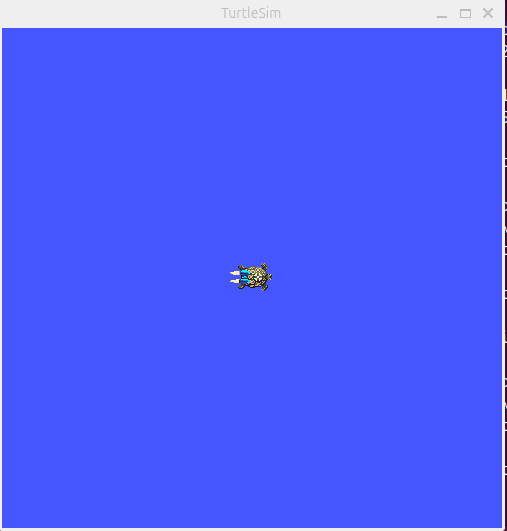
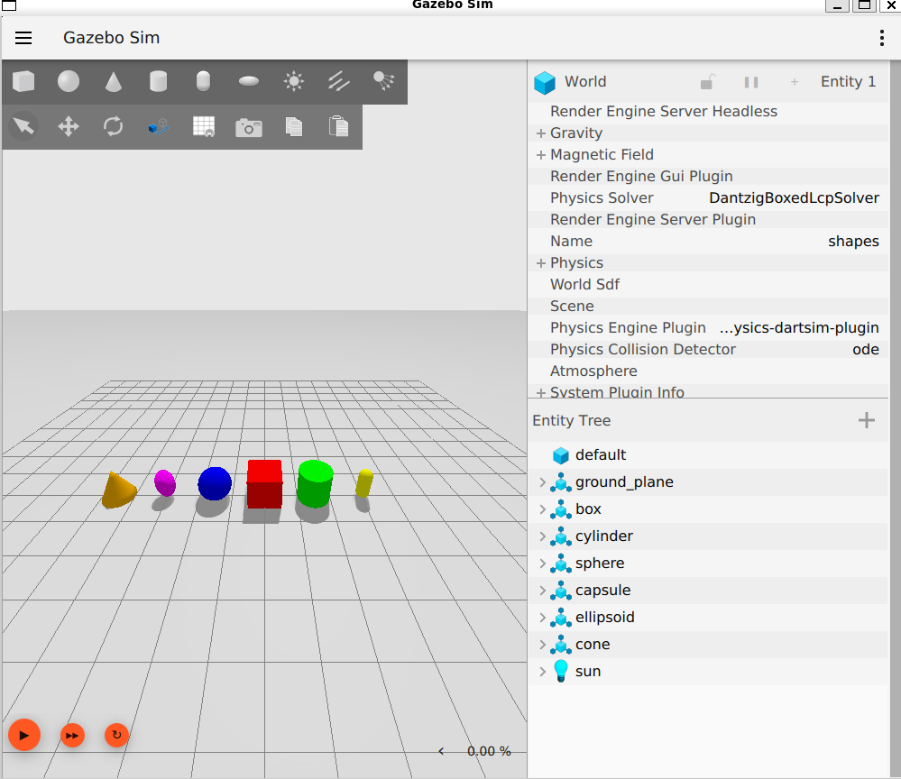
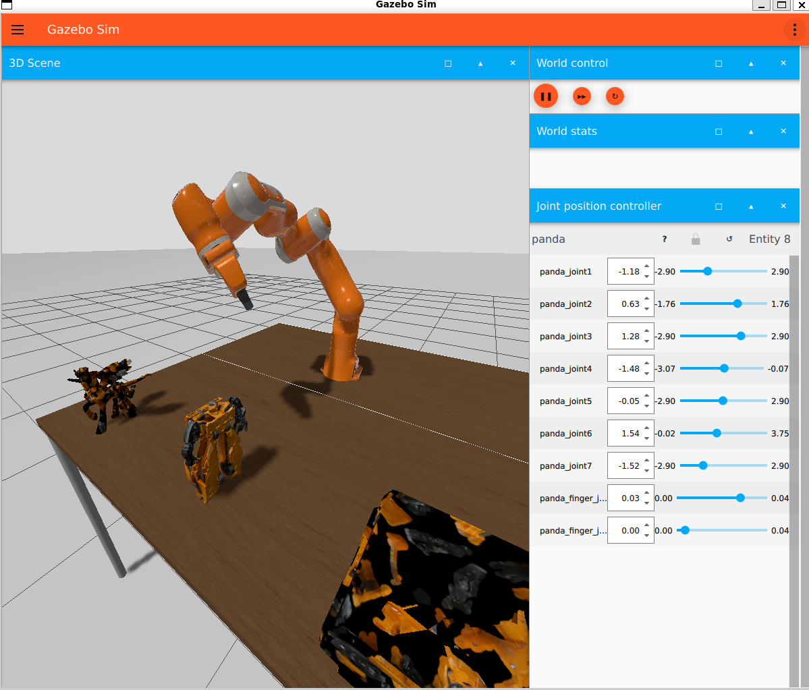
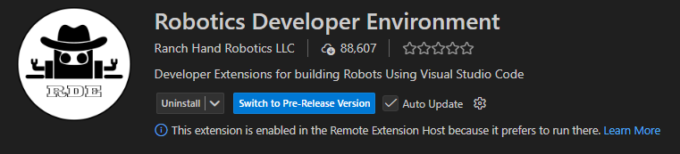
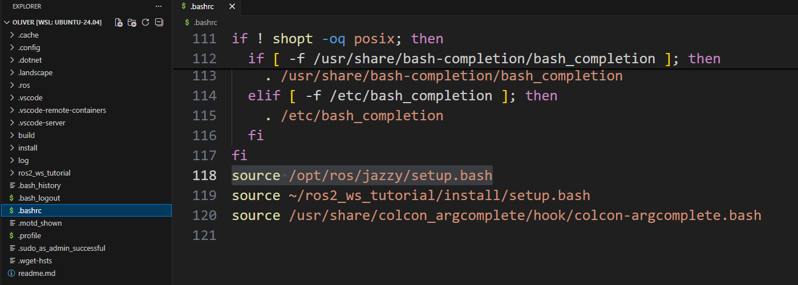

Install and configure ROS
1. Install WSL2 and Ubuntu 24.04
- If you are already on native Ubuntu: skip this Step 1 entirely (WSL2 + Ubuntu installation).
- If you are on Windows 11: follow all steps.
WSL2 (Windows Subsystem for Linux 2) is an improved version of WSL that allows you to run native Linux distributions on Windows without traditional virtual machines.
Open PowerShell as administrator:
This command:
- Enables Windows Subsystem for Linux (WSL) and the Virtual Machine Platform
- Sets WSL2 as the default version
- Downloads and installs Ubuntu 24.04 LTS (Noble Numbat is the current stable distro)
2. First boot and system update
If you are on Windows, launch Ubuntu (from the Start menu) and create a UNIX username/password (the password will not show characters while you type). Then run:
This will update Ubuntu.
3. System configuration for ROS 2
Before installing ROS, we need to configure the system for compatibility.
3.1 Configure locale (text encoding)
First, configure the locale (system language/encoding settings). ROS uses UTF-8, which prevents issues with special characters in ROS and other programs.
sudo apt update && sudo apt install locales
sudo locale-gen en_US en_US.UTF-8
sudo update-locale LC_ALL=en_US.UTF-8 LANG=en_US.UTF-8
export LANG=en_US.UTF-8
These settings use US English, but any UTF-8 locale works.
3.2 Enable “universe” and add the ROS 2 repository
First, make sure the Ubuntu Universe repository is enabled.
Now add the ROS 2 GPG key (for apt):
sudo apt update
sudo apt install -y curl
curl -sSL https://raw.githubusercontent.com/ros/rosdistro/master/ros.key \
| sudo tee /usr/share/keyrings/ros-archive-keyring.gpg
Finally, add the repository to your sources list:
echo "deb [arch=$(dpkg --print-architecture) signed-by=/usr/share/keyrings/ros-archive-keyring.gpg] \
http://packages.ros.org/ros2/ubuntu \
$(. /etc/os-release && echo $UBUNTU_CODENAME) main" \
| sudo tee /etc/apt/sources.list.d/ros2.list > /dev/null
4. Install ROS 2 Jazzy Desktop
Update apt to include the changes:
Install the full desktop distribution:
5. Verify the installation with an example
First, configure the environment. Add ROS setup to your startup file (~/.bashrc) so ROS commands are available every time you open a terminal:
For this test you will need two terminals, so open a second terminal.
In one terminal run a simple C++ node called talker:
ros2 run demo_nodes_cpp talker
In the other terminal run a Python node called listener:
ros2 run demo_nodes_py listener
You should see the talker printing Publishing: numbers and the listener printing I heard: numbers, matching the messages. This verifies both the C++ and Python APIs.
We can verify our packages installation with:
We can also list all executables with:
And filter executables per package with:
For example, with turtlesim:
To see usage options for ros2 run:
To run an executable:
ros2 run <package_name> <executable_name> # RUN structure
ros2 run turtlesim turtlesim_node # EXAMPLE RUN
This will run the following sim:

To test communication, run a new executable from the turtlesim package that lets you move the turtle with the keyboard:
How does this work? ROS 2 acts as middleware, in other words a communication network between different processes, encompassing all executables and connections between them.
!!! You can look at more info here: https://docs.ros.org/en/kilted/Tutorials/Beginner-CLI-Tools/Understanding-ROS2-Nodes/Understanding-ROS2-Nodes.html
Install (dependencies)
sudo apt update
sudo apt install ros-jazzy-robot-state-publisher ros-jazzy-joint-state-publisher-gui
# (often also handy)
sudo apt install ros-jazzy-xacro ros-jazzy-rviz2 ros-jazzy-tf2-ros
Verify with:
# If these print a path, they’re already installed:
ros2 pkg prefix xacro
ros2 pkg prefix robot_state_publisher
ros2 pkg prefix joint_state_publisher_gui
ros2 pkg prefix rviz2
ros2 pkg prefix tf2_ros
Install Gazebo Harmonic
Official guide: Gazebo Harmonic – Install on Ubuntu
Warning: In some cases, the gz binary may not be in your PATH until you restart your session or re-run source /opt/ros/jazzy/setup.bash.
Test:
A Gazebo window with a test world should open.

Launch Gazebo with ROS 2

Use any example to test.
Install extension for VS Code

To work with ROS in VS Code, we will install the ROS extension. Robotcis Developer Environment. WHich you cna find in the Extensions tab (Ctrl+Shift+X) by searching for "ROS". As we have a windows system with WSL2, make sure to install the extension in WSL. Byr running:
in your WSL terminal. And then install the extension from that window.Sourcing ROS 2
setup.bash is a shell script that prepares your current terminal to use ROS (and/or your ROS workspace).
it typically:
- Defines core environment variables so ROS can find packages and resources
- Extends your PATH so commands become available
- Updates library paths so binaries can find shared libraries at runtime
source is a shell built-in command (bash/zsh) that runs a script in your current terminal session.
We need to do this every time we open a new terminal, or add it to our shell startup file (e.g., ~/.bashrc for bash) to do it automatically.
To add it to your ~/.bashrc, you can:
open vscode on the home folder, open .bashrc and add at the end:

Then, either restart your terminal or run: